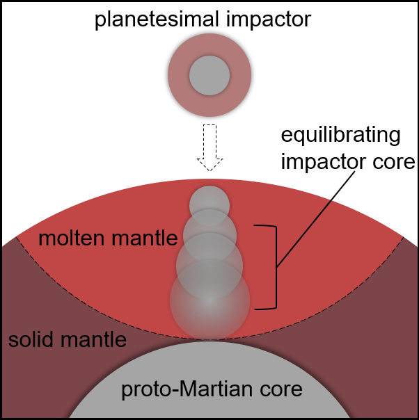

Matthew C. Brennan
Hoffman Laboratory 105
20 Oxford Street
Cambridge, MA 02138
Email: mcbrennan at g.harvard.edu
Phone: (617) 998-1514
Research
Texture of iron alloys at ultra-high pressures
 Earth's inner core is a moon-sized ball of solid metal. This metal is known to be an alloy of iron, nickel, and an as-yet-unidentified mixture of light elements (like oxygen and silicon). Seismic waves which pass through the inner core have revealed large-scale structures, probably arising from the deformation (or "texture") of the solid alloy.
Earth's inner core is a moon-sized ball of solid metal. This metal is known to be an alloy of iron, nickel, and an as-yet-unidentified mixture of light elements (like oxygen and silicon). Seismic waves which pass through the inner core have revealed large-scale structures, probably arising from the deformation (or "texture") of the solid alloy.
By squeezing an alloy sample between two diamonds, a technique called diamond anvil cell compression, it is possible to replicate the pressures of the deep Earth. These samples can then be analyzed with X-ray diffraction in order to directly observe the alloy's texture. This research helps us understand the formation of the real inner core.
Martain core–mantle differentiation

Mars, like all rocky planets, has an iron-rich metallic core. Compared to Earth's core, the Martian core is thought to be smaller (in terms of its portion of planetary mass) and may also be much richer in the light element sulfur.
Differences between the cores of Earth and Mars must have developed during core-mantle differentiation, the process by which the metals of a terrestrial body separate from the rocks.
This differentiation event is fundamental to planetary evolution and is influenced by the conditions inside the infant planet. By simulating many possible versions of Martian core formation, we are able to investigate these otherwise inaccessible primordial conditions.
Geophysical properties of deep Mars
 Although we'll never visit the deep Earth, the worldwide network of seismic detectors allows us to directly observe the mantle and core. Similar techniques were used on the Moon during the Apollo program, but no seismic instrument had ever been successfully deployed to another planet until NASA's InSight lander touched down in late 2018.
Although we'll never visit the deep Earth, the worldwide network of seismic detectors allows us to directly observe the mantle and core. Similar techniques were used on the Moon during the Apollo program, but no seismic instrument had ever been successfully deployed to another planet until NASA's InSight lander touched down in late 2018.
Locating and interpreting potential seismic events depends on models of Mars' structure, which in turn depend on poorly-known geophysical parameters. By constructing Martian structural models for a range of possible parameter values, we were able to evaluate how these will influence potential seismic observations, as well as add to the catalog of models available to the Marsquake Service.